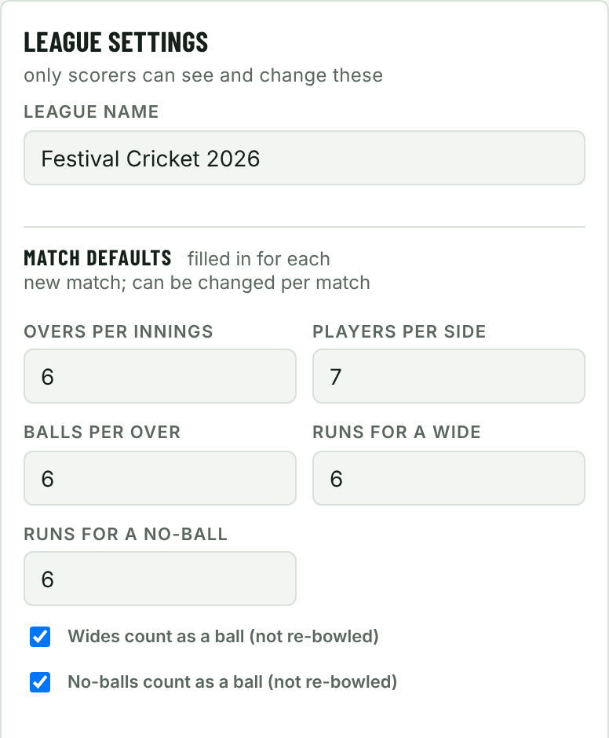
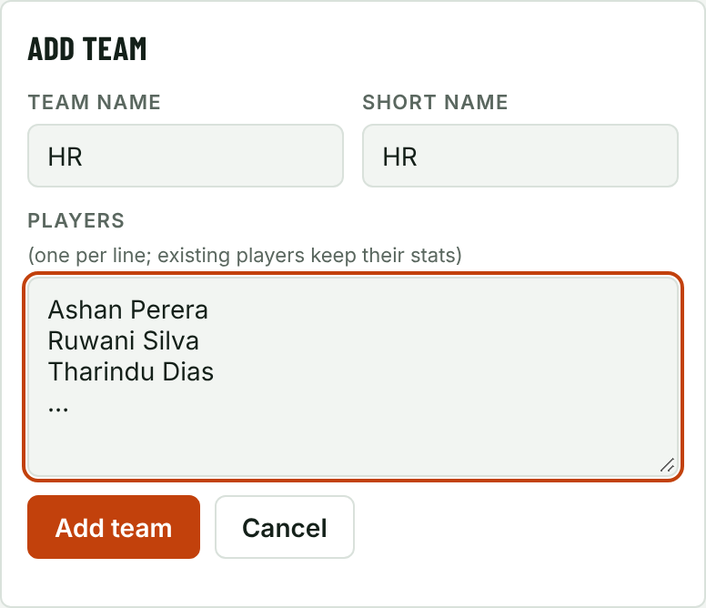
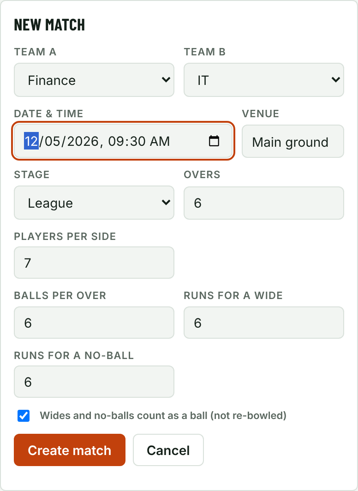
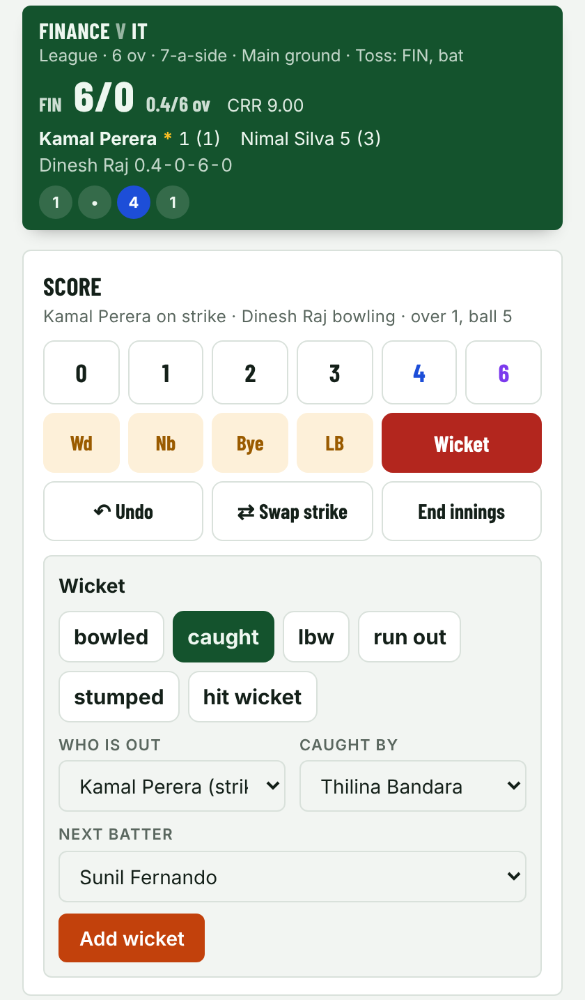
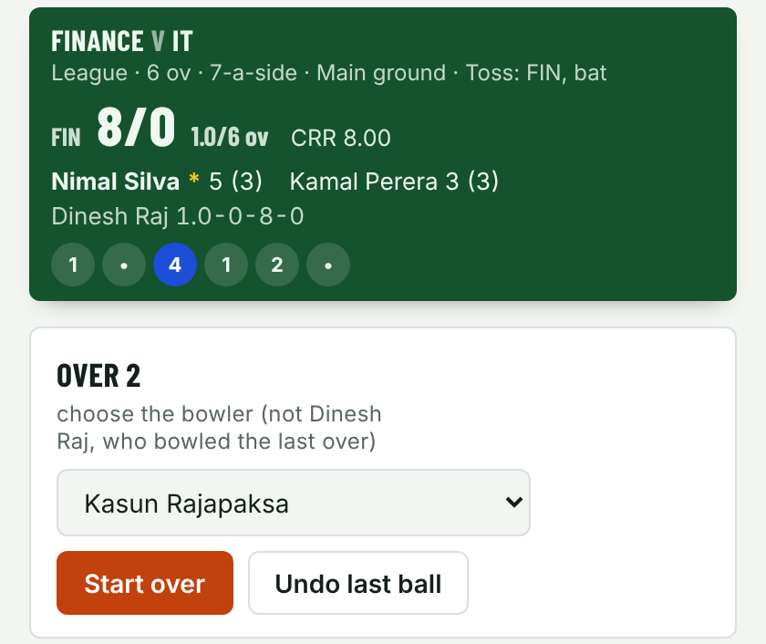

Festival Cricket · Scorer Guide
Part A: setting up the league, teams and matches. Part B: scoring a match ball by ball. Everyone watching sees changes live.
Part A · Setup (once, before the festival)
A1Sign in
- Open the cricket app link and tap Scorer sign in (top right).
- Enter the username and password the organiser gave you (e.g. scorer1). The badge changes to Scorer.
- Can't sign in? Check the spelling, then ask the organiser to reset your password.
A2League settings
- Open the Settings tab (shown only after you sign in as a scorer).
- Set the league name and the defaults for every new match: overs per innings, players per side, balls per over and the runs for a wide / no-ball (6 at this festival). Tick Wides count as a ball (and No-balls, if that rule applies) when they are not re-bowled. Points, bonus points and the net run rate method are set in the same form.
- Tap Save. Match defaults only affect matches created afterwards; points settings update the table straight away.

A3Add teams and players
- Open Teams and tap + Add team.
- Enter the team name and a short name (up to 5 letters, shown on the scoreboard).
- Type the players, one per line, and tap Add team. Add (R) after a reserve, e.g. Kamal Perera (R).
- To change a squad later, tap Edit on the team: add or remove names. Players who have already played keep their stats.
- A team can only be deleted after its matches are deleted.

A4Create matches
- Open Matches and tap + New match.
- Choose Team A and Team B, the date & time and venue.
- Stage: only League matches count in the points table and net run rate. Use Quarter-final, Semi-final, Final or Friendly for the others.
- Overs, players per side and balls per over are filled from the league settings (semi-finals and finals use the Knockout defaults); change them for this match if needed.
- Tap Create match. Use Edit match to fix details; teams can't be changed once scoring starts.

3Record a wicket
- Tap Wicket and choose how: bowled, caught, lbw, run out, stumped or hit wicket.
- Caught / stumped / run out: pick the fielder (needed for the best-fielder award).
- Run out: choose which batter is out and any runs completed before it.
- Pick the next batter and tap Add wicket.
- On the last wicket, the innings ends by itself.

4New over
- When an over ends, the app asks for the next bowler. The bowler of the last over can't bowl again straight away.
- Choose the bowler and tap Start over. Strike changes automatically.
- Last ball wrong? Tap Undo last ball here.

5Innings break and finish
- After the 1st innings the app shows the target. Choose the openers and bowler for the 2nd innings and tap Start innings.
- When the chase ends (target reached, overs used up or all out), check the scorecard, then tap Confirm result. The points table, net run rate and player awards update automatically.
- Match called off? Use Mark abandoned (each team gets the no-result points from League settings).
6Good habits
- Score as each ball happens; don't wait until the end of the over.
- Keep a paper note of the score each over as a backup.
- If the screen says it can't reach the database, check your internet and reload. Balls already saved are not lost.
- Only one person should score a match at a time.
- Sign out when you finish if you're using someone else's phone.
Problems? Contact the organiser. Never share your scorer password.
Part C · Match day: several matches at once
Three scorers can score three matches of the same league at the same time. Each match is saved separately, so scorers never overwrite each other, and the points table, net run rate and player stats update live from all of them.
C1Links
| Scorers & organisers | pmendis.github.io/pmendis/cricket/: sign in to score. Without signing in this page shows nothing. |
| Spectators | pmendis.github.io/pmendis/cricket/live/: live scores, no sign-in. Share this link, not the scorers' link. |
C2Before match day (organiser)
- Give every scorer their own login (e.g. scorer1, scorer2, scorer3). Never share one login between two scorers.
- In Access (owner), make sure each scorer has Score matches. Give one trusted person Manage all matches as head scorer, so they can fix any match.
- Create the matches either way:
- Each scorer creates their own match. It then belongs to them automatically.
- Or create them all in advance, then on each match page the owner uses Reassign scorer to hand one match to each scorer.
- Check the match header shows the right name, e.g. Scorer: scorer2. Only that scorer (and the head scorer) can edit, score or delete the match; others see it read-only.
C3On the day (each scorer)
- Sign in on your own phone, open Matches and tap your match only (look for your name in the header).
- Do the toss and openers, then score ball by ball as in Part B. The match appears on the live page as soon as the first innings starts.
- Charge your phone before the match and keep it on mobile data or reliable Wi-Fi.
- When your match ends, tap Confirm result. The table updates for everyone straight away.
C4If something goes wrong
| Scorer's phone dies | Nothing is lost: every ball is already saved. The owner uses Reassign scorer to give the match to another scorer (or the head scorer takes over), who carries on from the last ball. |
| Wrong ball entered | Tap ↶ Undo and score it again. |
| "Only scorerX can edit or score it" | You opened someone else's match. Go back and open yours, or ask the owner to reassign it. |
| Spectators see "Live scores are paused" | The organiser has switched off public viewing because of heavy traffic (Settings → Public viewing). Scoring carries on normally. |
With three matches running, every ball sends an update to every spectator. If the crowd is very large and the app slows down, the organiser can pause public viewing for a while; scorers are not affected.